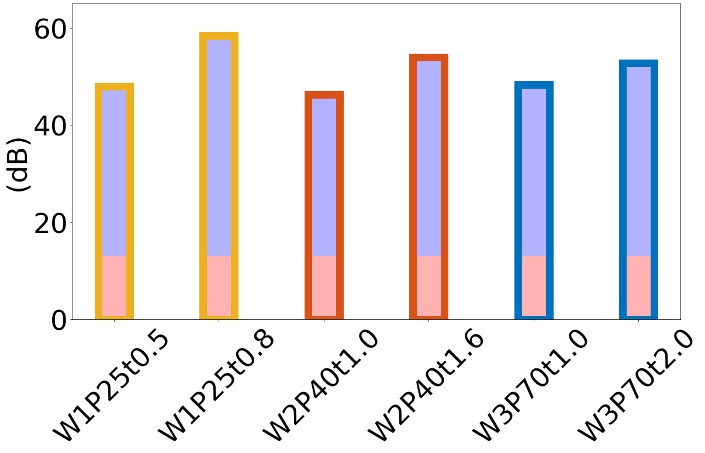

Microgrid Analysis Example¶
[31]:
import numpy as np
import pandas as pd
import matplotlib.pyplot as plt
plt.rcParams['font.size'] = '47'
plt.rcParams["figure.figsize"] = (18, 12)
plt.rcParams['savefig.dpi'] = 300
[2]:
# Read the SE data
plt.rcParams["figure.figsize"] = (12, 11)
P25W1 = pd.read_csv('../EMI 8-12/P25W1.csv')
frequency = P25W1['frequency']
magnetude = -20 * np.log10(np.sqrt(P25W1['S21re'] ** 2 + P25W1['S21im'] ** 2))
SE_P25W1 = np.mean(magnetude)
P40W2 = pd.read_csv('../EMI 8-12/P40W2.csv')
frequency = P40W2['frequency']
magnetude = -20 * np.log10(np.sqrt(P40W2['S21re'] ** 2 + P40W2['S21im'] ** 2))
SE_P40W2 = np.mean(magnetude)
P70W3 = pd.read_csv('../EMI 8-12/P70W3.csv')
frequency = P70W3['frequency']
magnetude = -20 * np.log10(np.sqrt(P70W3['S21re'] ** 2 + P70W3['S21im'] ** 2))
SE_P70W3 = np.mean(magnetude)
[3]:
SE_P25W1 = 58.4
SE_P40W2 = 54
SE_P70W3 = 52.8
[4]:
# Read the SER data
P25W1 = pd.read_csv('./R 8-12/DATA00.D1.csv')
frequency = P25W1['frequency']
magnetude = -20 * np.log10(np.sqrt(P25W1['S21re'] ** 2 + P25W1['S21im'] ** 2))
SER_P25W1 = np.mean(magnetude)
P40W2 = pd.read_csv('./R 8-12/DATA01.D1.csv')
frequency = P40W2['frequency']
magnetude = -20 * np.log10(np.sqrt(P40W2['S21re'] ** 2 + P40W2['S21im'] ** 2))
SER_P40W2 = np.mean(magnetude)
P70W3 = pd.read_csv('./R 8-12/DATA02.D1.csv')
frequency = P70W3['frequency']
magnetude = -20 * np.log10(np.sqrt(P70W3['S21re'] ** 2 + P70W3['S21im'] ** 2))
SER_P70W3 = np.mean(magnetude)
[5]:
SEA_P25W1 = SE_P25W1 - SER_P25W1
SEA_P40W2 = SE_P40W2 - SER_P40W2
SEA_P70W3 = SE_P70W3 - SER_P70W3
SE_A = [SEA_P25W1, SEA_P40W2, SEA_P70W3]
SE_R = [SER_P25W1, SER_P40W2, SER_P70W3]
SE = [SE_P25W1, SE_P40W2, SE_P70W3]
SE_bar = pd.DataFrame([SE_R, SE_A]).T
colors = ["#EDB120", '#D95319', "#0072BD"]
xticks = ["P25W1t0.8", "P40W2t1.6", "P70W3t2.0"]
[6]:
SE
[6]:
[58.4, 54, 52.8]
[7]:
ax_bar = SE_bar.plot.bar(stacked = True, color = ['r', 'b'], width = 0.3, alpha = 0.3)
ax_bar = SE_bar.sum(axis = 1).plot.bar(facecolor='none', edgecolor = colors, lw =13, width = 0.3)
ax_bar.legend(['$SE_R$', '$SE_A$'])
ax_bar.get_legend().remove()
plt.xticks([0, 1, 2], xticks, rotation = '45')
plt.ylabel('(dB)')
plt.ylim([0,65])
plt.tight_layout()
plt.savefig('Longetch 8-12.png')
[8]:
# Read the SE data
plt.rcParams["figure.figsize"] = (12, 11)
P25W1 = pd.read_csv('../EMI 8-12/P25W1Dnew.csv')
frequency = P25W1['frequency']
magnetude = -20 * np.log10(np.sqrt(P25W1['S21re'] ** 2 + P25W1['S21im'] ** 2))
SE_P25W1D = np.mean(magnetude)
P40W2 = pd.read_csv('../EMI 8-12/P40W2D.csv')
frequency = P40W2['frequency']
magnetude = -20 * np.log10(np.sqrt(P40W2['S21re'] ** 2 + P40W2['S21im'] ** 2))
SE_P40W2D = np.mean(magnetude)
P70W3 = pd.read_csv('../EMI 8-12/P70W3D.csv')
frequency = P70W3['frequency']
magnetude = -20 * np.log10(np.sqrt(P70W3['S21re'] ** 2 + P70W3['S21im'] ** 2))
SE_P70W3D = np.mean(magnetude)
[9]:
SE_P25W1D = 48
SE_P40W2D = 46.3
SE_P70W3D = 48.3
[10]:
# Read the SER data
P25W1 = pd.read_csv('./R 8-12/DATA29.D1.csv')
frequency = P25W1['frequency']
magnetude = -20 * np.log10(np.sqrt(P25W1['S21re'] ** 2 + P25W1['S21im'] ** 2))
SER_P25W1D = np.mean(magnetude)
P40W2 = pd.read_csv('./R 8-12/DATA30.D1.csv')
frequency = P40W2['frequency']
magnetude = -20 * np.log10(np.sqrt(P40W2['S21re'] ** 2 + P40W2['S21im'] ** 2))
SER_P40W2D = np.mean(magnetude)
P70W3 = pd.read_csv('./R 8-12/DATA31.D1.csv')
frequency = P70W3['frequency']
magnetude = -20 * np.log10(np.sqrt(P70W3['S21re'] ** 2 + P70W3['S21im'] ** 2))
SER_P70W3D = np.mean(magnetude)
[33]:
SEA_P25W1D = SE_P25W1D - SER_P25W1D
SEA_P40W2D = SE_P40W2D - SER_P40W2D
SEA_P70W3D = SE_P70W3D - SER_P70W3D
SE_A = [SEA_P25W1D, SEA_P25W1, SEA_P40W2D, SEA_P40W2, SEA_P70W3D, SEA_P70W3]
SE_R = [SER_P25W1D, SER_P25W1, SER_P40W2D, SER_P40W2, SER_P70W3D, SER_P70W3]
SE_bar = pd.DataFrame([SE_R, SE_A]).T
colors = ["#EDB120", "#EDB120", '#D95319', '#D95319', "#0072BD", "#0072BD"]
xticks = ["W1P25t0.5", "W1P25t0.8", "W2P40t1.0", "W2P40t1.6", "W3P70t1.0", "W3P70t2.0"]
[34]:
SE_A
SE_R
[34]:
[13.122165511953193,
13.120253690079394,
13.170956687989417,
13.094612840039792,
13.1333519128548,
13.005945547961645]
[36]:
ax_bar = SE_bar.plot.bar(stacked = True, color = ['r', 'b'], width = 0.3, alpha = 0.3)
ax_bar = SE_bar.sum(axis = 1).plot.bar(facecolor='none', edgecolor = colors, lw =13, width = 0.3)
ax_bar.legend(['$SE_R$', '$SE_A$'])
ax_bar.get_legend().remove()
plt.xticks([0, 1, 2, 3, 4, 5], xticks, rotation = '45')
plt.ylabel('(dB)')
plt.ylim([0,65])
plt.tight_layout()
plt.savefig('ShortEtch 8-12.png')

[ ]: